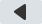
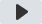
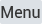

Xuper WebOS
v1.0.5
XUPER TV
Búsqueda popular
Actualizar
Total: 10
No hay resultados
1. Intente nuevamente usando el nombre de la película, serie, director o actor para obtener un resultado más preciso.
2. Para buscar canales en vivo, vaya a canales en vivo en modo de pantalla completa
¿Quién está viendo ahora?
Selecciona tu perfil o administra tus usuarios

-10s
+10s
Ajustes (Abajo)Temporadas
Episodios
OKReproducir
BACKVolver
SELECCIÓN
IDIOMA Y SUBTÍTULOS
CALIDAD / RESOLUCIÓN
FORMATO DE PANTALLA
FEEDBACK
Tipo:
Género:
Año:
País:
Audio: